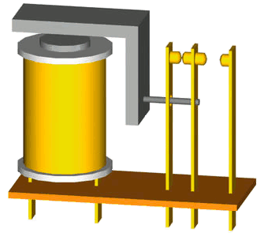
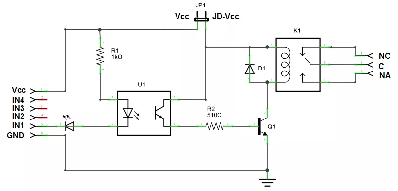
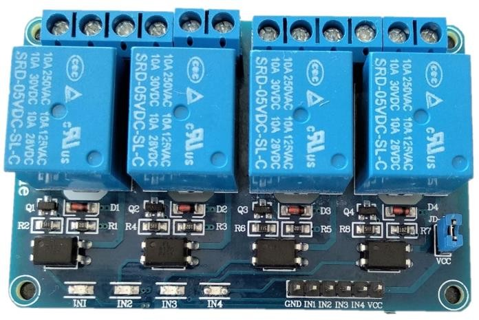
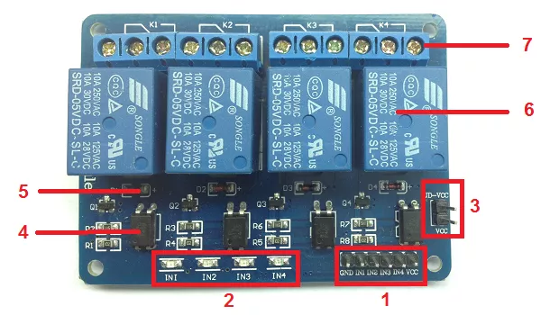

Componente
Un relé es elemento electromecánico que se compone de una bobina y de contactos.
El circuito de control hace que la bobina reciba corriente eléctrica, lo que produce un mover los contactos de los interruptores en el circuito de potencia. Por tanto hace un control de ON/OFF e independiza los circuitos de control de los de potencia.

Relay_principle_horizontal.jpg: Digigalos / Obra derivada: Digigalos, CC BY-SA 3.0, vía Wikimedia Commons.
Módulo relé
Descripción General
Módulo de 4 relés que funcionan a 5V, manejan cargas hasta 10A/250V, aislados mediante optoacopladores y con LEDs de estado.

Componentes de la Placa
[1] Conector de entradas (IN1-IN4) y alimentación (GND-Vcc).
[2] 4 LEDs indicadores de estado.
[3] Jumper selector de alimentación.
[4] 4 Optoacopladores FL817C.
[5] 4 Diodos de protección.
[6] 4 Relés SONGLE (5V / 10A/250V).
[7] Bornas de salida: Común, NA y NC.


Funcionamiento
Entrada y Aislamiento: La entrada IN1 activa el optoacoplador. Al estar en nivel BAJO (GND), circula corriente hacia Vcc a través de R1 (1K).
Activación del Transistor: El fototransistor del opto alimenta la base de Q1 mediante R2 (510) cuando es iluminado por el diodo interno.
Etapa de Potencia: Q1 (emisor común) se satura y cierra los contactos del relé. El diodo D1 protege contra tensiones inversas de la bobina.
Conclusión: Una señal BAJA en la entrada satura a Q1 y activa el contacto normalmente abierto (NA) del relé.